BSc Thesis · UPV · September 2026 · 9.2/10
Front & rear wings for a 2026 F1 car
Design and CFD optimisation of a multi-element front and rear wing under the FIA 2026 Technical Regulations, first in isolation and then on a full car, in both active aero modes: Corner Mode (Z) and Straight Mode (X).
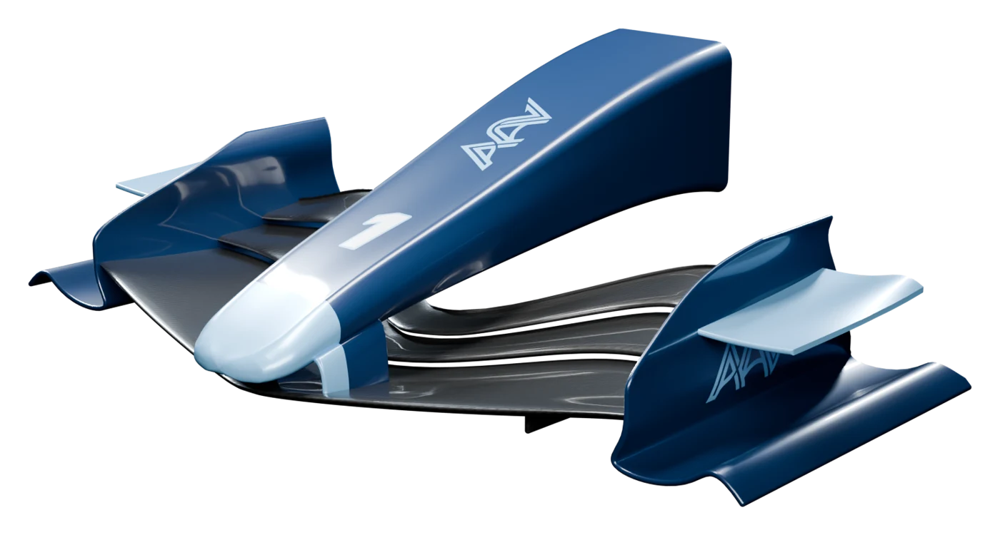
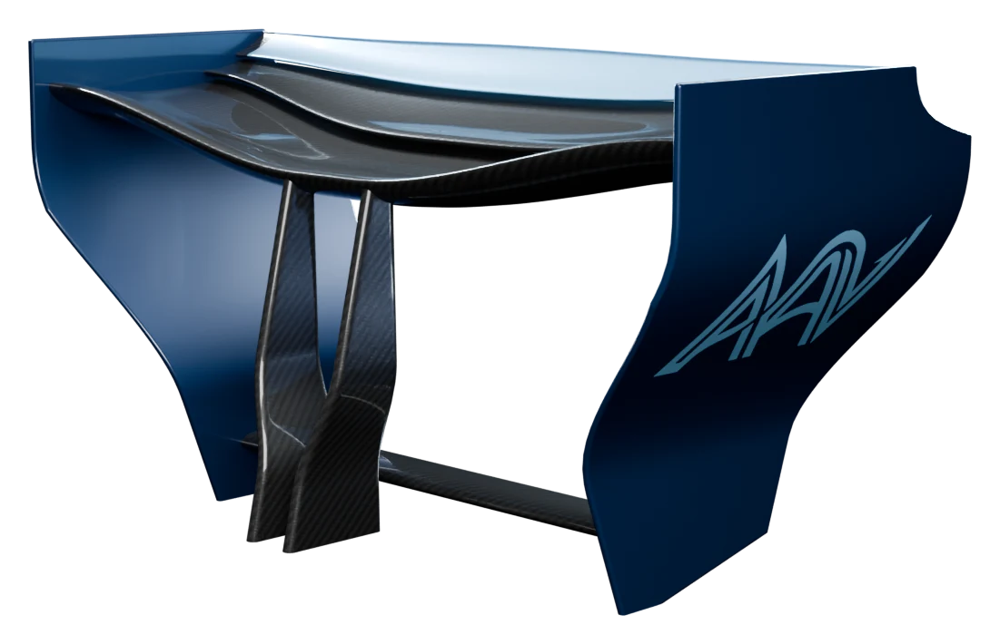
The car, in my livery
Both final wings fitted to the reference 2026 car and rendered in Blender Cycles: navy paint, exposed carbon on the wing elements and floor, and my AAV logo. Same geometry that went through CFD.
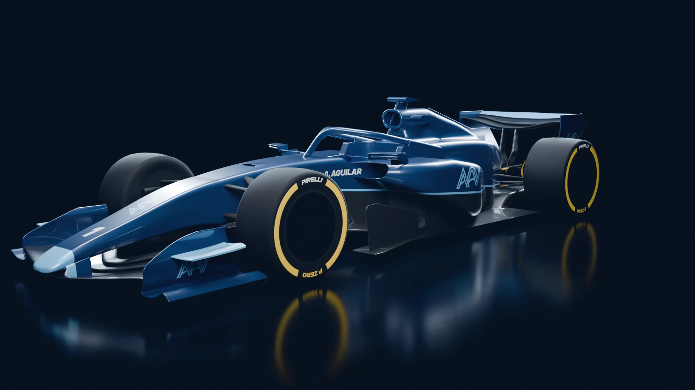
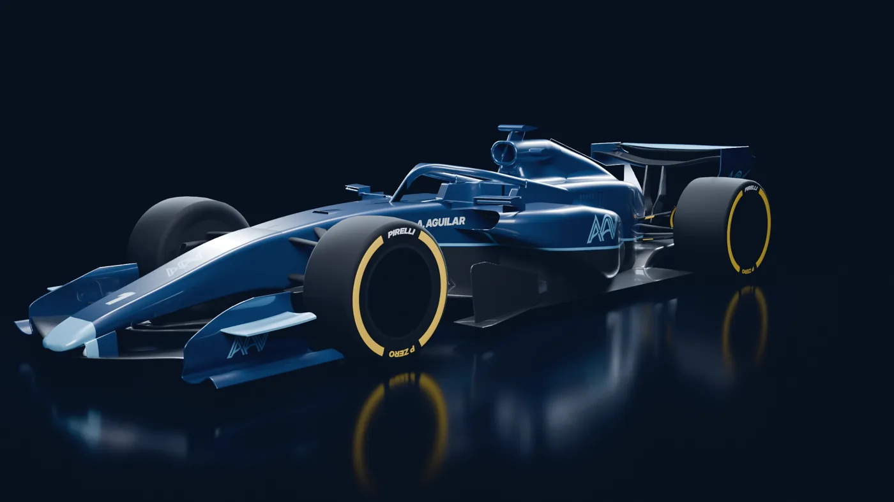
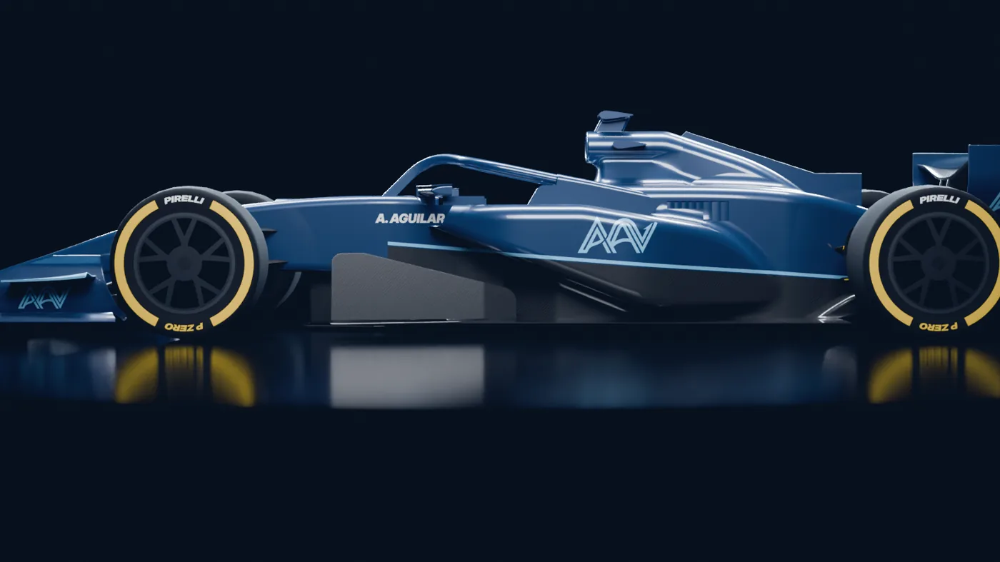
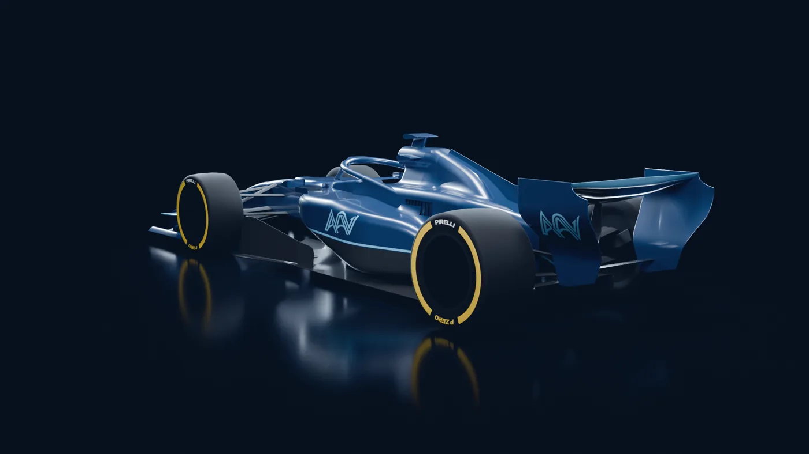
Method
A chain of increasing fidelity: cheap 2D screening chooses the airfoils, expensive 3D runs are spent only on geometry that has earned them.
- XFLR5
Airfoil screening
13 candidates for the front wing and 16 for the rear, ranked by efficiency at each element's own Reynolds number and angle.
- STAR-CCM+ 2D
Cascade CFD
The shortlisted combinations simulated as real multi-element cascades, with slot gaps and overlaps, to pick one configuration per wing.
- Fusion 360 · STAR-CCM+ 3D
Isolated wings
Built inside the FIA reference volumes, then optimised version by version: 8 for the front wing, 7 for the rear.
- STAR-CCM+ 3D
Full car
Both wings mounted on a reference 2026 car with moving ground, in Corner Mode and Straight Mode.
Front wing
Up from 3217 N in V1 (+42.8%), with efficiency held at about 16.
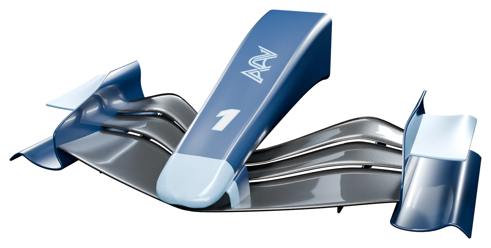
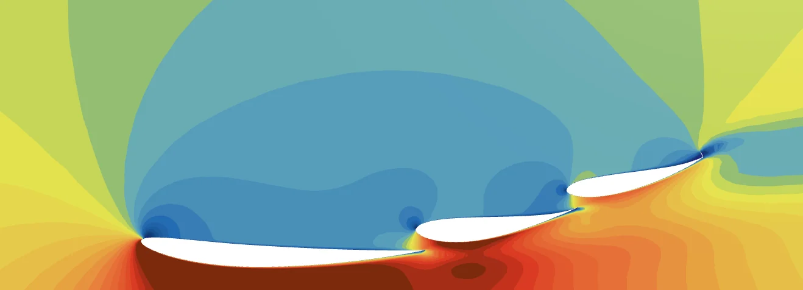
2D velocity field of the chosen cascade. Fast flow (red) under the main plane, the slower region (blue) above it.
Choosing the cascade
Each element works at its own Reynolds number, so each was chosen on its own regime. Four combinations went through 2D CFD; this one won.
- Main planeNACA 4408−4°
- Flap 1GOE 303+6°
- Flap 2BE 122-125+12°
Eight versions
The series is not a straight climb. V2 to V4 tested ideas that lost downforce or efficiency and were dropped. The jump at V6 is the ground clearance optimisation, the single biggest lever in the whole study.
Pick a version on the chart to read its numbers.
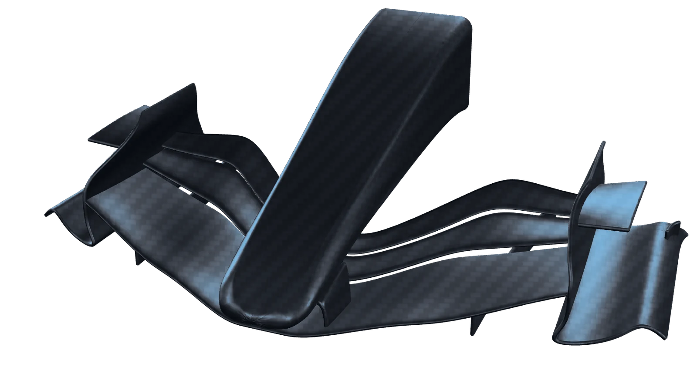
V1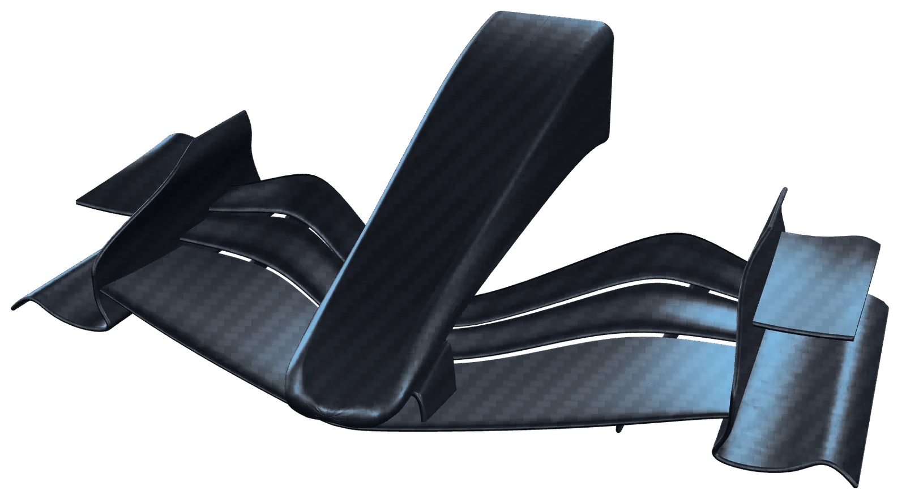
V8V1 against V8
Same camera, same scale. The endplate grew a curved footplate and a reshaped top, the strakes moved, and the whole wing sits closer to the ground.
Endplate curvature WSS-led
Near-zero wall shear stress at the last flap's tip showed separation. Smoothing the plate's curvature there reattached the flow.
Endplate and strake outwash
Curving the plate outward and adding a strake pushes the wake away from the front tyre instead of feeding it.
Airfoil loft spanwise
Controlling how the sections blend across the span kept the cascade attached towards the endplate.
Ground clearance V6 jump
Lowering the wing into stronger ground effect added more downforce than every other change together.
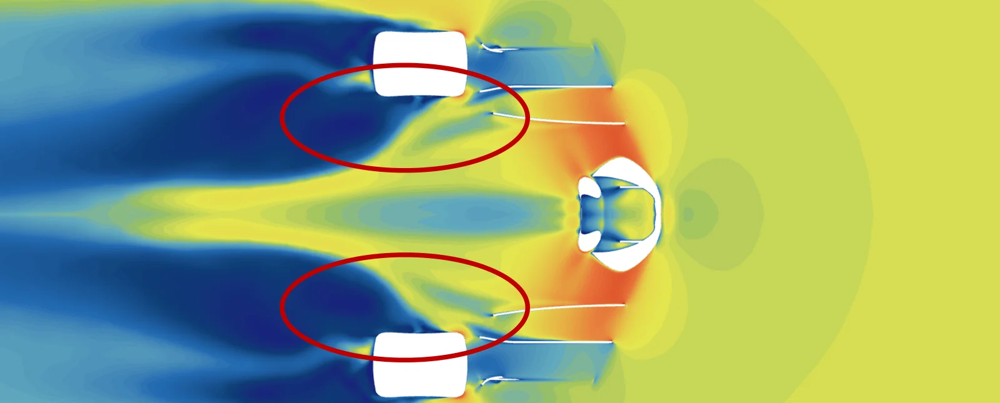
V2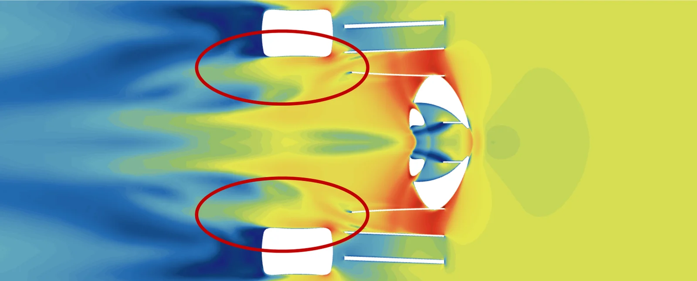
V8Plan view, flow from right to left.
Managing the tyre wake
The front wing's second job is to steer air around the front tyre. In V8 the outwash moves the wheel wake outboard and the low-speed region behind it (circled) shrinks, so the floor and sidepods would see cleaner air.
- Main plane54.2%
- Flap 119.8%
- Endplate16.0%
- Flap 28.4%
- Diveplane0.9%
- Strake0.7%
Where the load comes from
Share of the 4593 N in V8. The main plane carries more than half and, thanks to the suction at its leading edge, even produces a small thrust (−31 N of drag). The flaps carry the drag.
Straight Mode
The 2026 rules let the flaps feather on the straights. Same mesh, same conditions as V8, flaps at minimum incidence.
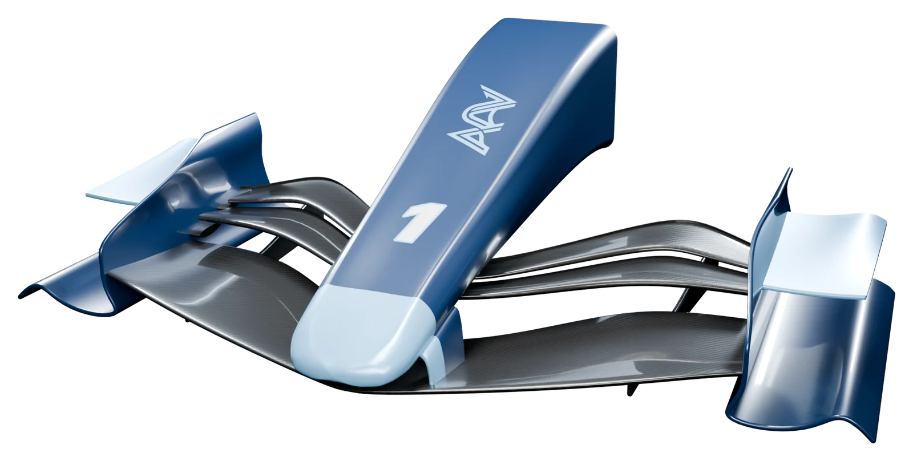
Straight Mode · XSide planes swept from the centreline out to the endplate, at one third of real speed.
Front planes swept downstream through the wing, at one third of real speed.
Rear wing
Up from 2108 N in V1 (+20.9%), with efficiency kept in a narrow 5.1 to 5.8 band.
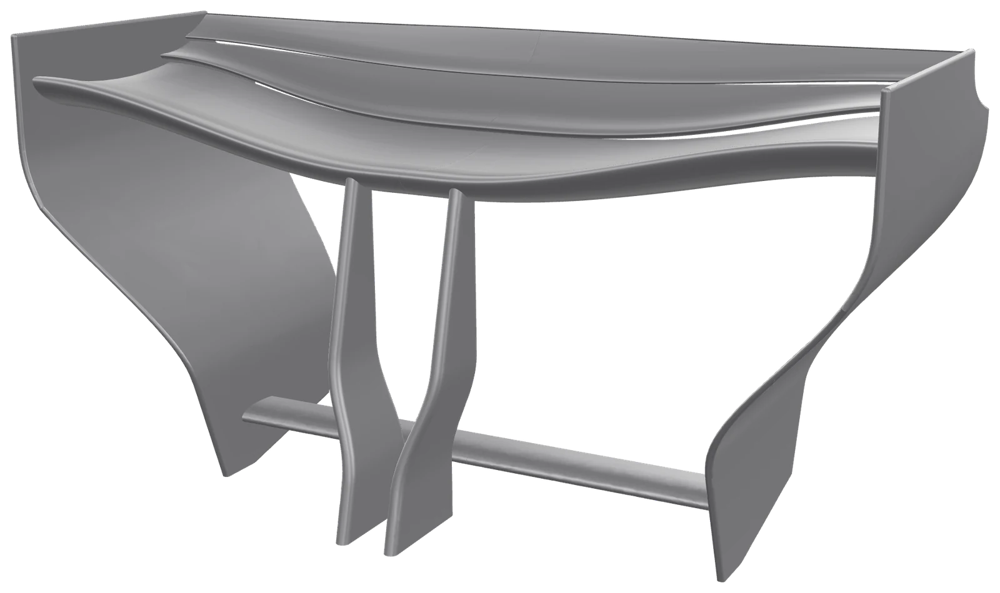
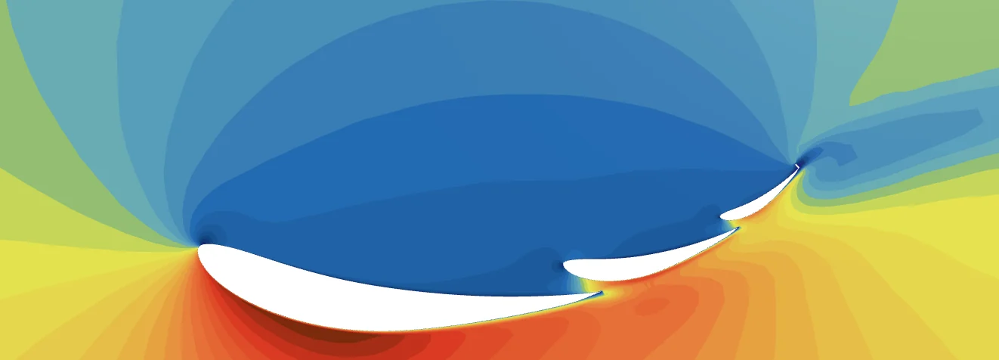
2D velocity field of the winning cascade: three E423 airfoils of decreasing chord.
One airfoil, three times
Sixteen airfoils from the UIUC database, five cascades in 2D CFD. The high-lift Eppler E423 won all three positions, set at a progressively steeper angle.
- Main planeE423 · 260 mm chord−6°
- Primary flapE423 · 115 mm chord+12°
- Secondary flapE423 · 60 mm chord+30°
Seven versions
Three lines of work explain the series: curving the wing harder inside the regulatory box, redesigning the endplate, and growing the flap chord while keeping the main plane.
The endplate redesign alone cut its own drag from 35.7 N to 3.6 N.
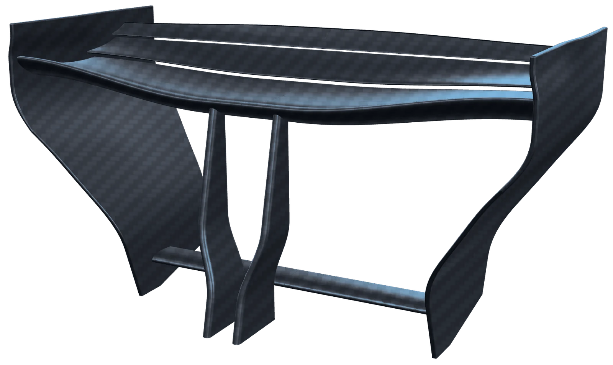
V1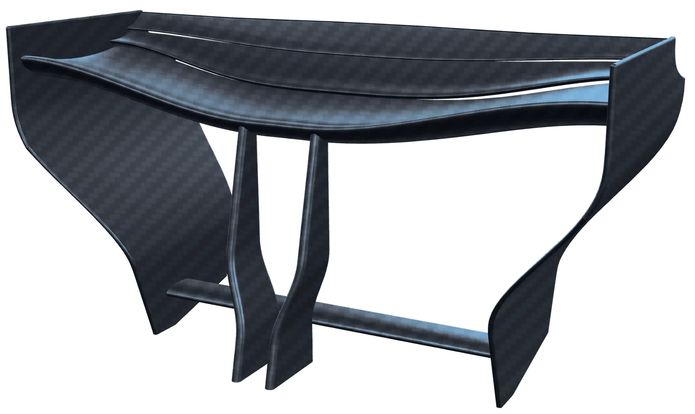
V7V1 against V7
Same camera, same scale. A deeper spoon in the centre, longer flaps, and an endplate trimmed behind the airfoils.
Curving inside the box +24% main plane
More spanwise curvature with each version, at the limit of the regulatory volume and of attached flow. Main plane load went from 1850 N to 2297 N.
Endplate redesign −90% its drag
A smoother plate-to-wing transition and a cut-away behind the flaps removed the dead-air pockets on its inner face.
Longer flaps same main plane
More flap chord turns the flow further before it leaves the wing, without touching the element that carries most of the load.
Pylons and brace near-zero cost
Streamlined symmetric sections, as the rules require, adding 0.8% downforce and very little drag.
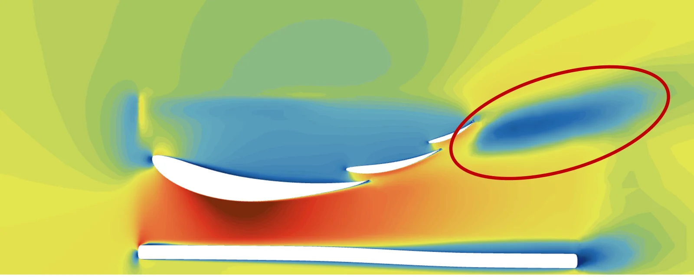
V1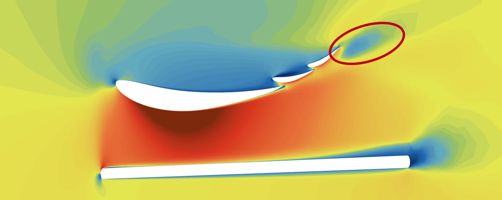
V7Side plane next to the endplate, flow from left to right.
Separation, removed
In V1 the original endplate curvature tore the flow off behind the flaps (circled). V7 runs more chord and more incidence, yet stays attached to the trailing edges and leaves a thinner wake.
- Main plane90.2%
- Flap 120.3%
- Flap 26.8%
- Brace0.8%
- Endplate−18.0%
Where the load comes from
Share of the 2548 N in V7. The main plane does almost all the work with only 7 N of drag. The endplates produce 460 N of lift, the price of the low pressure under the wing leaking round its tips.
Straight Mode
Flaps opened to minimum incidence. Unlike the front wing, efficiency goes up: drag falls faster than downforce.
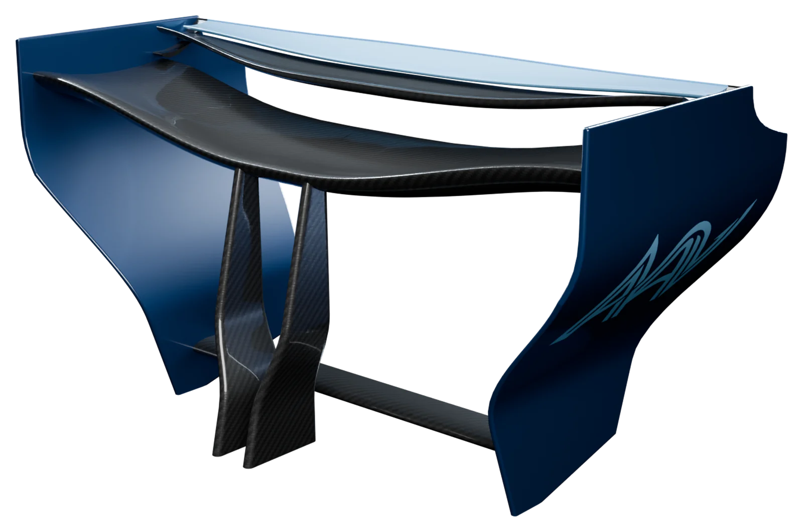
Straight Mode · XSide planes swept across the span towards the endplate, at one third of real speed.
Full car
Net downforce with both wings fitted, for 2213 N of drag. In Straight Mode total drag falls only 11.7%, although the wings alone shed 54.4%.
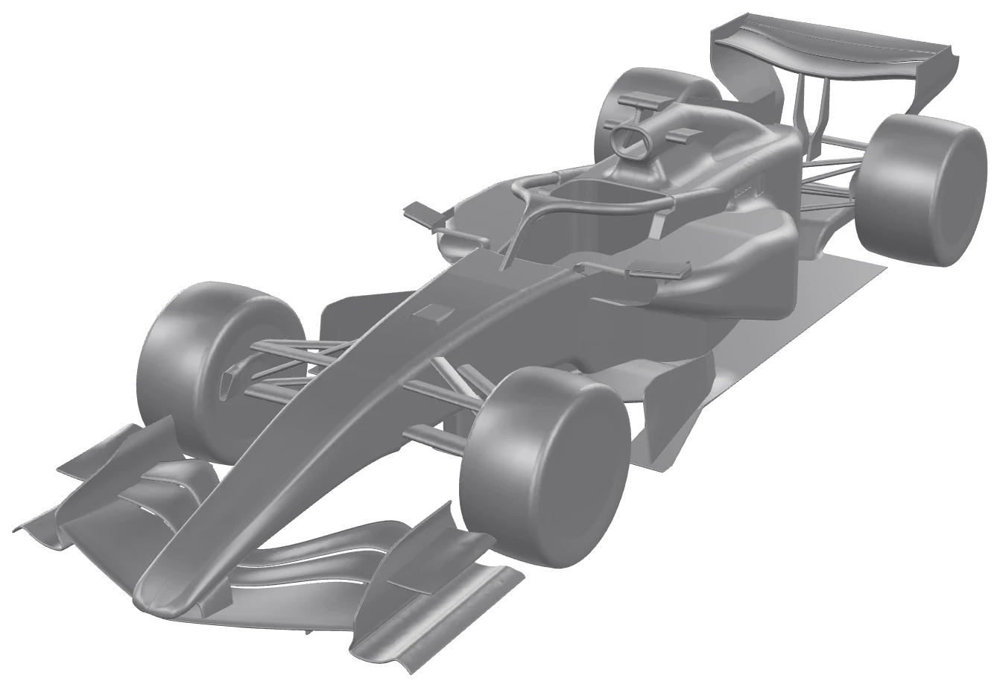
Wings in their real environment
A central body, a halo and four wheels disturb the flow as they would on track. The floor is simplified on purpose: the study measures the wings, not the whole car.
The car is a public GrabCAD model: its floor is a flat plate with no Venturi tunnels, so it produces lift instead of downforce. Corner Mode, 60 m/s, moving ground.
- −41.5%
Front wing installed
2688 N against 4593 N alone. The monocoque and floor inlet raise the pressure where the wing works, and the tyre wake invades its outer span.
- −23.2%
Rear wing installed
1958 N against 2548 N alone. The low-energy wake of the cockpit and engine cover lands on the most loaded part of the wing.
- 73%
Front aero balance
With a non-working floor, all the load sits on the wings and the car would oversteer heavily. A real floor carries about half the downforce.
Dirty air on the rear wing
The cause of the rear wing's loss, seen two ways: the separated region on its flaps, and the total-pressure deficit arriving from the cockpit just upstream.
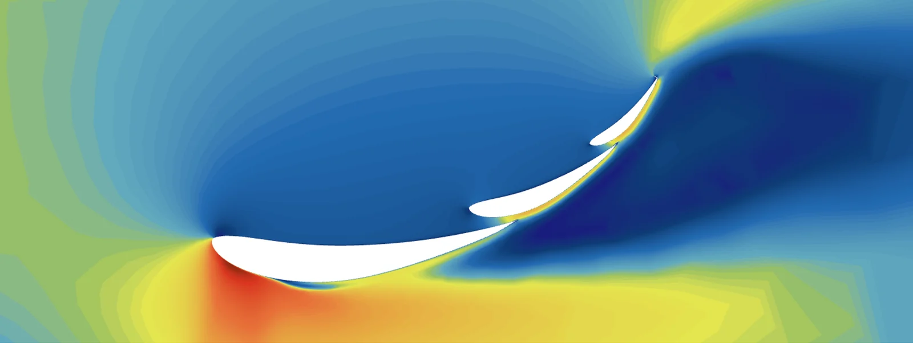
Centre plane over the installed rear wing: the blue pocket above the flaps is separated flow.
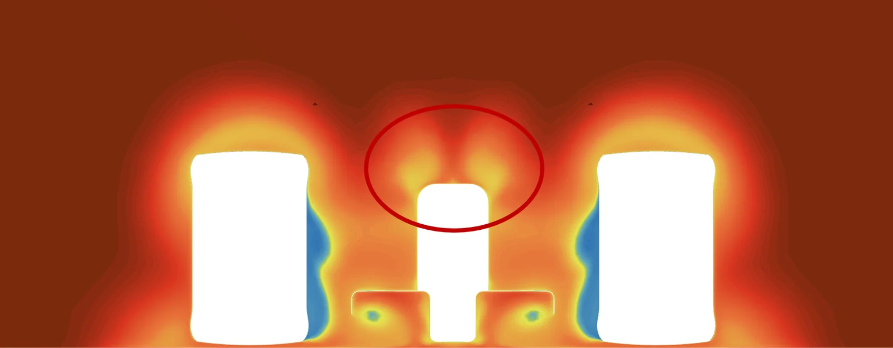
Total pressure upstream of the rear wing. The deficit on the centreline (circled) is the monocoque's wake.
Corner Mode against Straight Mode
Both wings switch at once: the front flaps feather and the rear flaps open. Same car, same mesh, same 60 m/s; the forces of each configuration are below.
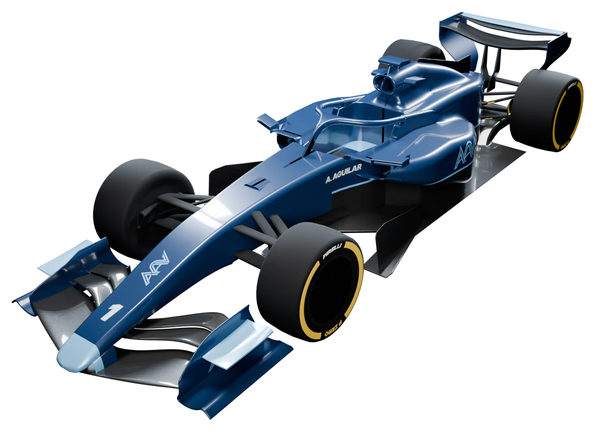
Straight Mode · X| Group | Fz Z [N] | Fz X [N] | Drag Z [N] | Drag X [N] | Δ drag |
|---|---|---|---|---|---|
| Front wing | 2688 | 968 | 245 | 120 | −51.1% |
| Rear wing | 1958 | 1208 | 351 | 152 | −56.7% |
| Bodywork | −153 | 353 | 508 | 621 | +22.2% |
| Wheels | −831 | −823 | 1172 | 1111 | −5.2% |
| Total | 3674 | 1637 | 2213 | 1954 | −11.7% |
What Straight Mode really buys
Both wings feathered at once halve the wing package's drag, from 597 N to 272 N. But the exposed wheels alone make 53% of the car's drag in Corner Mode, and with bodywork they reach 89% in Straight Mode.
Active aero can only act on the share of drag the wings create. That bound is the most useful lesson of the study.
The rear wing loses less downforce installed (−38.3%) than alone (−49.6%) for a bad reason: the cockpit wake had already cut its load by 23%.
Explore in 3D
The final geometry of both wings, straight from the CAD, in my livery. Switch between Corner Mode and Straight Mode to see what moves; the camera stays where you left it.
Drag to rotate · scroll or pinch to zoom · double-click to reset
What comes next
The study closes with a list of what would make the numbers closer to a real car. Most of it is now my MSc thesis.
Venturi floor
A floor compliant with the 2026 rules, the change with the most impact: rear downforce to rebalance the car and different flow into both wings.
Rotating wheels
Wheel rotation and realistic covered rims over the moving ground, to capture the wakes that dominate drag.
Transient mode switch
URANS or DES of the 400 ms switch between Z-mode and X-mode, to check stability during the change.
Track conditions
Yaw, roll and ride-height changes under braking, and the front wing's sensitivity to ride height.
Mesh independence
A refinement study on the final versions to put an uncertainty on the absolute figures.
Formal optimisation
Coupling the automated mesh and solve chain to a parametric or adjoint optimiser.
Continuing at UPM: the full aerodynamic package of a 2026 F1 car.